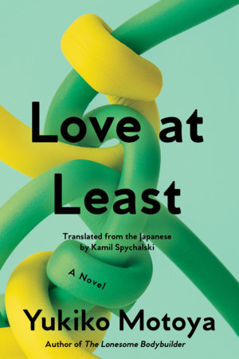

Love at Least
Yukiko Motoya, translated by Kamil Spychalski
Yukiko Motoya's novel, in Kamil Spychalski's translation, follows twenty-five-year-old Yasuko through a sincere, darkly comic search for connection. Soft Skull places the work in twenty-first-century Japan and does not name a city.
Motoya is the author of The Lonesome Bodybuilder. Soft Skull notes that she won the Akutagawa Prize for An Exotic Marriage in 2016. Spychalski is a Japanese-English translator and the winner of the 7th JLPP International Translation Competition.
A Weekly Reads pick for November 15, on Seoul to Tokyo on the B&S Literary Atlas. The publisher does not name a city, so the book is listed with the route, not pinned. Go There. Read It.
On the Atlas: Seoul to Tokyo →
Buy NowTip the Booktender